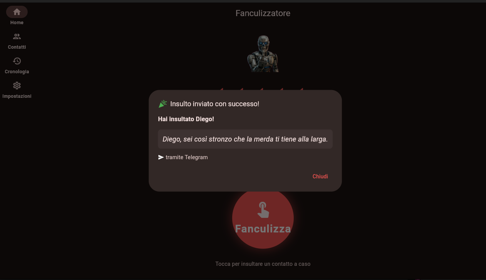
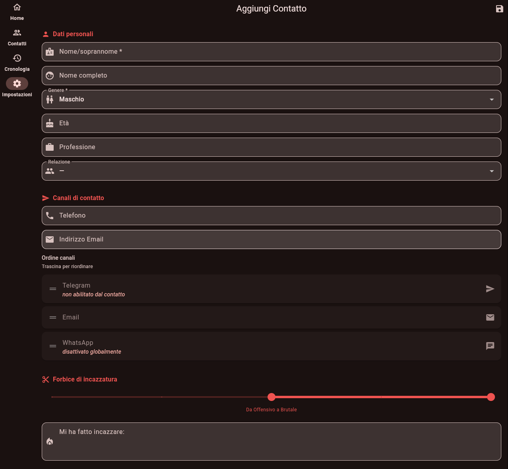

Fanculizzatore
Scegli quando e quanto insultare. Al chi e al come, ci pensa Fanculizzatore.
Che cos'è
Fanculizzatore è un'app che ti aiuta a far sapere agli altri cosa pensi di loro.
Tieni traccia di chi ti ha fatto incazzare, quanto e perché. Poi, quando ti girano i coglioni, premi il pulsante Fanculizza, e un contatto a caso riceverà un insulto a caso.
Puoi regolare l'intensità dell'insulto che verrà inviato, da simpatico (se proprio hai voglia di giocare) a brutale (raccomandato). Il destinatario verrà selezionato in modo compatibile, rispettando la forbice di incazzatura da te impostata per ogni contatto.
A cosa serve
Fanculizzatore ti aiuta a gestire costruttivamente le emozioni disaccoppiando il processo di riflessione sulle motivazioni della tua rabbia dal momento distruttivo dell'insulto.
Ma soprattutto, ti aiuta a mandare tutti in culo.
Screenshot dell'app




Come funziona
Fanculizzatore supporta quattro canali di invio alternativi.
- Email — Richiede di aver impostato credenziali SMTP o un account Google. Il destinatario riceverà l'insulto direttamente dal tuo indirizzo email.
- Telegram — Fanculizzatore invierà l'insulto tramite un bot Telegram personale che configuri tu stesso. Ogni utente ha il proprio bot, e i destinatari devono attivare la ricezione tramite un deep link.
- Signal — Fanculizzatore invierà l'insulto tramite Signal, utilizzando il tuo account Signal esistente. I destinatari devono avere Signal installato e avere il tuo numero salvato.
- WhatsApp — Fanculizzatore aprirà l'app sul tuo telefono, o WhatsApp Web su desktop, con l'insulto pronto in canna; a te rimarrà solo da premere Invia.
Puoi scegliere per ogni contatto l'ordine di preferenza in cui tentare i vari canali. I canali WhatsApp e Signal possono essere disattivati globalmente.
Attivazione del bot Telegram
Per creare il tuo bot Telegram personale, clicca su Apri BotFather nelle Impostazioni e segui le istruzioni. Ogni utente configura il proprio bot personale - non esiste un bot centrale condiviso.
I tuoi prossimi insulti inviati per email conterranno un link. Cliccando sul link, il destinatario attiverà la ricezione di messaggi dal tuo bot.
Il link contiene un codice associato in modo univoco ma non reversibile al numero di telefono del contatto; questo permette a Fanculizzatore di associare al numero un'utenza Telegram, senza il rischio di esporre direttamente il numero di telefono.
L'associazione tra codice univoco e utenza Telegram viene mantenuta nella history del bot, che viene cancellata ogni 24 ore, e nel database locale dell'utente di Fanculizzatore che utilizza quel bot.
Attivazione di Signal
Per utilizzare Signal come canale di invio, Fanculizzatore utilizza il tuo account Signal esistente. È necessario avere Signal installato sullo stesso dispositivo.
Il canale Signal richiede la registrazione del dispositivo tramite un link QR code che potrai scansionare dalla sezione Impostazioni → Signal. Una volta collegato, Fanculizzatore potrà inviare insulti direttamente tramite il protocollo Signal, in modo sicuro e cifrato.
I destinatari devono avere il tuo numero salvato nei propri contatti per ricevere i messaggi via Signal.
Lista dei contatti
Fanculizzatore non ha accesso ai contatti nella tua rubrica --- decidi tu chi merita i tuoi insulti! Puoi aggiungere i contatti manualmente, oppure, su Android, esportarli dalla tua rubrica con l'azione Condividi. I contatti che non hai selezionato rimarranno al riparo dai tuoi insulti - finché non aggiungi anche loro, che probabilmente se lo meritavano fin dall'inizio.
Per ogni contatto, oltre a numero di telefono ed email, puoi impostare età, professione, genere, e il tipo di relazione che ha con te. Queste impostazioni verranno salvate sul tuo dispositivo e aiuteranno Fanculizzatore a scegliere l'insulto più adatto all'occasione.
E se qualcuno non volesse ricevere i tuoi insulti?
Allora non doveva farti incazzare! Ma può sempre decidere di bloccare il tuo bot, bloccarti su WhatsApp e dirigere le tue email nello spam, come quando ci si insultava manualmente.
Tuttavia, il nostro suggerimento è che installi a sua volta Fanculizzatore per ripagarti della stessa moneta.
Download
Caricamento...